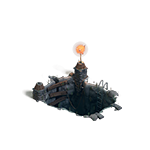

Получено: файл; исходный URL. Иллюстрация объекта в исторической браузерной версии; исходная страница ссылается на zombicity.info, скачан файл по тому же пути на moy.su — побайтовое совпадение не проверено. Для разных космических пристаней и телефонных будок источник использует общие пиктограммы; это не доказательство идентичности построек. Страница: источник.
Расщелина — Пещера Истины
Историческая браузерная версия ВКонтакте; редакция неизвестна- Тип
- Постройка
- Версия и дата
- Историческая браузерная версия ВКонтакте; редакция неизвестна
Данные по источнику · браузерная версия ВКонтакте; редакция не установлена · 07.10.2018 — публикация, дата последующей редакции неизвестна
Предварительно: Фанатский источник; текущие условия и независимость от других справочников не установлены.. Требуется сверка.
- Расположение
- Пещера Истины; выход на Скалистый риф.
- Стоимость выхода
- 1 Бикини из Пляжной коллекции, 20 000 монет, 1 компас.
- Предупреждение источника
- «Пещера Истины вот-вот обрушится» и вернуться будет невозможно. Это историческое предупреждение, дата и механизм обрушения не уточнены.


Связанные сущности
нет проверенных связей — требуется сверка.